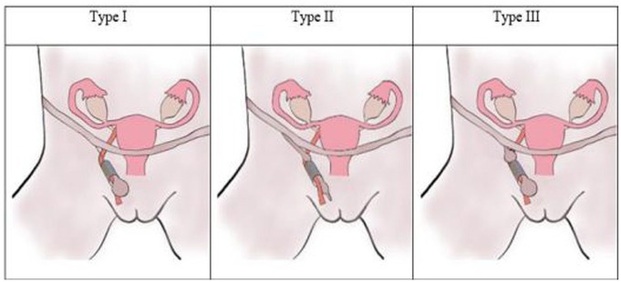
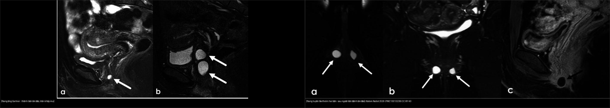
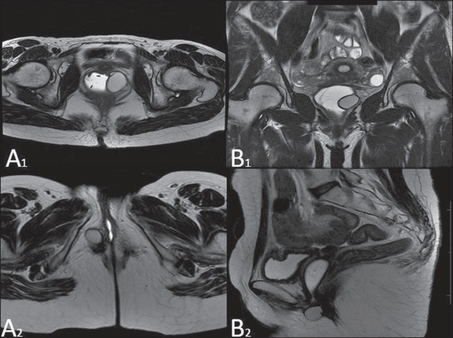
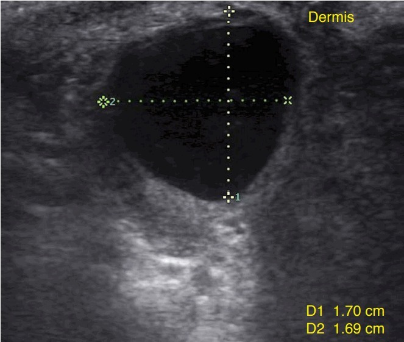
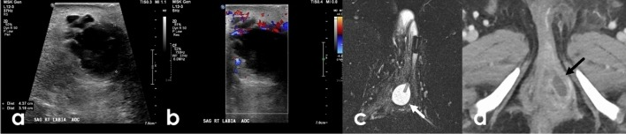
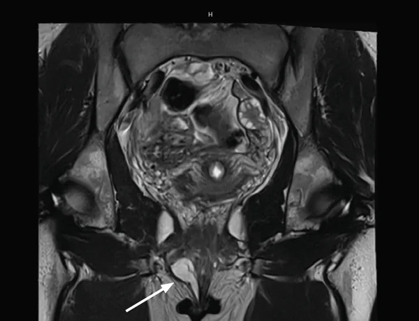
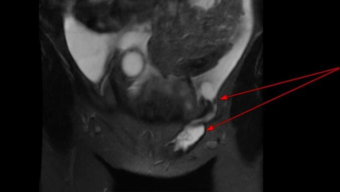

548 — Nang/khối lành vùng âm hộ – âm đạo: Bartholin, Gartner & ống Nuck / Benign vulvovaginal cysts: Bartholin, Gartner duct & canal of Nuck
Tags: pattern:nang-am-ho pattern:nang-am-dao pattern:nang-ben vung:am-ho vung:am-dao vung:ben protocol:US-am-ho protocol:MRI-chau
Mức chắc chắn (certainty): tổng hợp y văn (literature synthesis) — nhóm tự biên từ tổng quan MRI âm hộ Abdom Radiol 2026 (PMC13013239), tổng quan MRI âm đạo Radiol Bras 2015 (PMC4567364), tiểu luận siêu âm âm hộ Ultrasonography 2018 (PMC6177693) và các ca CC BY về ống Nuck; số liệu định lượng lấy nguyên văn từ bài gốc.
1. Tổng quan — giải phẫu, phôi thai học & vì sao mỗi "nang" nằm một chỗ
- Tuyến Bartholin (Bartholin/greater vestibular gland): nằm ở 1/3 sau môi lớn, đổ vào rãnh tiền đình (vestibule) ở vị trí 4 giờ và 8 giờ; ống tuyến dài 2–2,5 cm. Ống bị tắc → nang Bartholin, bội nhiễm → áp-xe Bartholin. Đây là nang âm hộ hay gặp nhất, gặp ở khoảng 2% phụ nữ, chủ yếu tuổi sinh sản (Karabük E & Ganime Aygün E, J Turk Ger Gynecol Assoc 2022, PMC9161003).
- Nang ống Gartner (Gartner duct cyst): tồn dư ống trung thận (mesonephric/Wolffian duct) — ở nữ ống này thoái triển, đoạn còn sót ở thành âm đạo TRƯỚC–BÊN, phía trên khớp mu → nang thành bên trên âm đạo, thường nhỏ, không triệu chứng; có thể kèm bất thường đường niệu–sinh dục (Ferreira DM và cộng sự, Radiol Bras 2015, PMC4567364).
- Nang ống Nuck (canal of Nuck cyst/hydrocele): ở nữ, màng bụng (peritoneum) chạy theo dây chằng tròn xuống ống bẹn; bình thường bít kín. Không bít hết → nang/hydrocele vùng bẹn – môi lớn, phân 3 type theo Counseller–Black (1941): type I = nang kín từng ổ (thường gặp nhất), type II = còn thông với khoang phúc mạc (nguy cơ thoát vị!), type III = hai thùy hình đồng hồ cát do thắt ở lỗ bẹn sâu (Bahall V và cộng sự, Case Rep Womens Health 2026, PMC13325312).
- Ảnh hưởng lên hình ảnh (TẠI SAO):
- Nang đơn thuần chứa dịch: T2 rất sáng (giống nước), T1 tối, thành mỏng, KHÔNG ngấm thuốc ở vách trong.
- Nếu dịch giàu protein/mucin/máu → T1 sáng lên: phải T1 fat-sat để phân biệt với mỡ (nang bã/dermoid).
- Áp-xe: vách dày, ngấm thuốc mạnh, phù mô xung quanh, hạn chế khuếch tán (DWI sáng/ADC tối) — đây là dấu hiệu chuyển "nang" → "áp-xe" (Golden E và cộng sự, Abdom Radiol 2026, PMC13013239).
- Nang ống Nuck type II: thấy đường thông trực tiếp khoang phúc mạc ↔ nang — dấu hiệu chốt (PMC13325312).
- Ngưỡng định lượng bắt buộc nhớ:
- Nang/áp-xe Bartholin ≈ 2% phụ nữ (PMC9161003).
- Tái phát sau điều trị: mở thông túi (marsupialization) 8,3% (11 ca) vs ống thông Word (Word catheter) 18,8% (12 ca), p = 0,034; điểm hài lòng VAS 4 vs 3 — marsupialization tốt hơn (n = 196) (PMC9161003).
- Số liệu giải phẫu bệnh 57 ca u/giả u âm hộ–âm đạo (Efared B và cộng sự, BMC Res Notes 2026, PMC12903300): 52,6% ở âm hộ; tuổi trung bình 38,55 ± 16,65; 56,7% dạng nang, kích thước trung bình 3,9 ± 2,07 cm (0,8–9 cm); lành tính 59,6%, trong đó nang Bartholin 19,3%; tổn thương âm đạo ác tính nhiều hơn hẳn (70,4% vs 13,4%, p < 0,001).
- Ung thư tuyến Bartholin (BGC): hiếm, chiếm 3–7% ung thư âm hộ (Kostov S và cộng sự, Cancers 2025, PMC12691067) — cờ đỏ khi khối cứng, cố định, > 40 tuổi, không xẹp sau chọc/dẫn lưu, tái phát nhanh.
- Canal of Nuck: hiếm; thường gặp ở trẻ em nhưng cũng gặp ở phụ nữ tuổi sinh sản; chẩn đoán hay nhầm với thoát vị bẹn/thoát vị đùi (PMC13325312).
2. Mẫu hình + chẩn đoán phân biệt theo vị trí (Gamut)
- Theo vị trí — quy tắc "vị trí là chốt":
- Tiền đình sau – môi lớn (4h/8h): nang/áp-xe Bartholin; nang biểu bì (epidermoid); u/mụn mồ hôi; u tuyến Bartholin (ác).
- Thành âm đạo trước–bên, TRÊN khớp mu: nang Gartner; nang Müllerian (thành trước, đường giữa hơn).
- Quanh niệu đạo (paraurethral), đoạn xa: nang Skene; túi thừa niệu đạo (urethral diverticulum).
- Vùng bẹn – môi lớn (inguino-labial): nang/ hydrocele ống Nuck; thoát vị bẹn/đùi; hạch; lạc nội mạc ống Nuck; nang bọc phúc mạc.
- Theo mẫu hình trên ảnh: (1) nang đơn thuần tròn, bờ mỏng, không ngấm; (2) nang có váy/ngấm + phù quanh = áp-xe; (3) khối đặc – ngấm mạnh – DWI hạn chế = nghi ác; (4) nang thông với phúc mạc = ống Nuck type II; (5) nang ở thành bên trên âm đạo + bất thường thận cùng bên = Gartner (gợi ý hội chứng OHVIRA).
- Gợi nhớ theo chữ cái vị trí: Bartholin = Below/behind (sau, tiền đình, dưới khớp mu); Gartner = Above (trên khớp mu, thành bên); Nuck = groiN (bẹn–môi lớn).
flowchart TD
A["Khoi/nang vung am ho - am dao"] --> B{"Vi tri?"}
B -->|"Tien dinh sau 4h/8h"| C["Nang/ap-xe Bartholin"]
B -->|"Thanh am dao truoc-ben, tren khop mu"| D["Nang Gartner (kiem tra than cung ben)"]
B -->|"Quanh nieu dao"| E["Nang Skene vs tui thua nieu dao"]
B -->|"Ben - moi lon"| F["Nang ong Nuck vs thoat vi ben"]
C --> G{"Co dau, soT, vach ngam?"}
G -->|"Khong"| H["Nang Bartholin: theo doi / marsupialization"]
G -->|"Co"| I["Ap-xe: dan luu + khang sinh; marsupialization"]
F --> J{"MRI: thong phuc mac?"}
J -->|"Type II"| K["Nguy co thoat vi - phau thuat dong ong Nuck"]
J -->|"Type I/III"| L["Cat nang / theo doi neu khong trieu chung"]

Sơ đồ 3 type: type I nang kín từng ổ (thường gặp nhất), type II còn thông phúc mạc (nguy cơ thoát vị), type III hai thùy hình đồng hồ cát do thắt ở lỗ bẹn sâu. Nguồn: G Meskel T và cộng sự, Clin Med Insights Case Rep 2025 (PMC12441254), CC BY-NC 4.0 (nguyên bản, không ghép).3. Bảng so sánh phân biệt (ma trận đối chiếu)
| Thực thể (entity) | Hình ảnh điển hình (US / MRI) | Chốt vào (rule-in) | Chốt loại (rule-out) | Gợi ý xác nhận |
|---|---|---|---|---|
| Nang Bartholin | US: nang trống âm/hồi âm kém, bờ rõ, tăng âm sau; MRI: T2 rất sáng, thành mỏng, không ngấm | Vị trí 4h/8h tiền đình sau, môi lớn; không đau; thành mỏng | Khối đặc/ngấm mạnh hoặc đau + vách dày → áp-xe/u ác | Lâm sàng + US; MRI nếu không điển hình |
| Áp-xe Bartholin | US: dịch hỗn hợp echo + vách/váng + lắng cặn, bờ kém rõ; Doppler: tăng tưới máu quanh; MRI: vách ngấm, phù quanh, DWI hạn chế | Đau, sưng, sốt + vách dày/ngấm + phù quanh | Nang đơn thuần thành mỏng, không phù → không áp-xe | Dẫn lưu + cấy; marsupialization |
| Nang ống Gartner | MRI: nang T2 sáng ở thành âm đạo trước–bên, trên khớp mu; có thể đa nang nhỏ | Vị trí trên khớp mu + thành bên âm đạo | Nang ở tiền đình sau/dưới khớp mu → Bartholin | MRI tiểu khung; soát thận cùng bên |
| Nang ống Nuck | US: nang/hydrocele hình thoi ở ống bẹn–môi lớn, đôi khi thay đổi khi Valsalva; MRI: T2 sáng, type II thấy đường thông phúc mạc | Vị trí bẹn–môi lớn + đường thông phúc mạc (type II) | Nang ở tiền đình sau → Bartholin; có quai ruột/mỡ → thoát vị | MRI chọn lọc; phẫu thuật đóng ống Nuck |
| Nang Skene | US/MRI: nang quanh niệu đạo đoạn xa, đường giữa–bên | Vị trí cạnh niệu đạo xa | Nang thành bên trên âm đạo → Gartner | MRI + soi niệu đạo |
| Túi thừa niệu đạo | MRI: túi quanh niệu đạo, có thể ngấm viền, đôi khi có sỏi/cặn | Nằm quanh niệu đạo + triệu chứng tiểu | Nang đơn thuần không liên quan niệu đạo | Soi niệu đạo/VCUG, MRI |
| Nang biểu bì (epidermoid) | US: nang trống âm trong trung bì, da–bì nguyên vẹn | Nang trong trung bì + không liên quan tuyến/niệu đạo | Vị trí tuyến Bartholin/Gartner → nghĩ nang tuyến | Lâm sàng; cắt nếu triệu chứng |
| Ung thư tuyến Bartholin | Khối đặc, ngấm mạnh, DWI hạn chế, có thể xâm lấn/xuất huyết | Tuổi > 40 + khối cứng/cố định + không xẹp sau dẫn lưu | Nang/áp-xe đơn thuần đáp ứng dẫn lưu → không ác | Sinh thiết; BGC = 3–7% ung thư âm hộ |

Trái: nang ống Gartner — thành bên âm đạo, phía trên khớp mu. Phải: nang Bartholin — sau/ngoài tiền đình âm đạo, dưới khớp mu. Nguồn: Golden E và cộng sự, Abdom Radiol 2026 (PMC13013239), CC BY 4.0; ghép letterbox bằngtools/make_composite.py.

Hình gốc so sánh trực tiếp: (A1,B1) nang ống Gartner ở thành bên âm đạo, trên khớp mu; (A2,B2) nang Bartholin ở thành sau âm đạo đoạn xa, ngoài lòng âm đạo. Nguồn: Ferreira DM và cộng sự, Radiol Bras 2015 (PMC4567364), CC BY 4.0.4. Protocol chụp + xử trí
- Siêu âm — đầu tay cho khối nông/âm hộ: đầu dò linear cao tần 7–15 MHz, đặt trực tiếp lên khối; ghi kích thước, hồi âm trong lòng, vách, cặn/lắng, thành phần đặc, tưới máu Doppler; với nang Gartner/Skene dùng đầu dò âm đạo. US phân biệt tốt nang đơn thuần vs áp-xe (tăng tưới máu quanh, dịch hỗn hợp echo) — Cheung VYT, Ultrasonography 2018, PMC6177693.
- MRI tiểu khung — khi khối sâu/lớn/tái phát/không điển hình: T2W axial–coronal–sagittal, T1W ± fat-sat (tách mỡ vs máu/protein), DWI/ADC (áp-xe/khối đặc), DCE (vách ngấm). Đo kích thước và ghi tương quan với khớp mu/niệu đạo/lỗ bẹn sâu — đây là chìa khóa định danh nang (Golden E và cộng sự, PMC13013239; Ferreira DM và cộng sự, PMC4567364).
- Xử trí (tóm lược thực hành):
- Nang Bartholin có triệu chứng: marsupialization (tái phát thấp hơn) hoặc ống thông Word; áp-xe: rạch dẫn lưu ± đặt ống ± kháng sinh (PMC9161003).
- Nang Bartholin > 40 tuổi / nghi ác → sinh thiết/mô bệnh, không chỉ dẫn lưu (BGC 3–7% ung thư âm hộ) (PMC12691067).
- Nang Gartner: theo dõi nếu nhỏ, không triệu chứng; cắt nội soi âm đạo nếu to/gây khó chịu/đau khi giao hợp; luôn kiểm tra thận cùng bên.
- Nang ống Nuck: phẫu thuật đóng/cắt ống Nuck (đặc biệt type II vì nguy cơ thoát vị); tránh nhầm với thoát vị bẹn.
- Skene/túi thừa niệu đạo: MRI + soi niệu đạo để chọn đường mổ.
5. Biến thể bình thường và cạm bẫy
- Nhầm vị trí = nhầm chẩn đoán: ca nang ống Nuck hai bên bị chẩn đoán là nang Bartholin trên lâm sàng, đến khi MRI mới phân định (Chamseddine R et al., Case Rep Obstet Gynecol 2026, PMC13580851) — luôn đối chiếu tiền đình sau (Bartholin) vs bẹn–môi lớn (Nuck).
- Ống Nuck type II: thông phúc mạc → nguy cơ thoát vị/sa quai ruột; đừng chỉ "theo dõi nang" (PMC13325312).
- "Nang" ở phụ nữ lớn tuổi: khối đặc/cứng/cố định, không xẹp sau dẫn lưu, tái phát nhanh → sinh thiết loại trừ ung thư tuyến Bartholin (3–7% ung thư âm hộ) — đừng mặc định "nang lành" (PMC12691067).
- Nang Gartner dễ nhầm với nang Müllerian/ nang Skene/túi thừa niệu đạo: chốt bằng tương quan giải phẫu với khớp mu và niệu đạo trên MRI, không dựa vào tín hiệu (mọi nang dịch đều T2 sáng) (PMC4567364, PMC13013239).
- T1 sáng không đồng nghĩa mỡ: dịch giàu protein/mucin/máu cũng T1 sáng → cần T1 fat-sat để tránh gọi sai "nang bã/dermoid" (PMC13013239).
- Áp-xe vs nang: vách dày/ngấm + phù quanh + DWI hạn chế = áp-xe; nếu chỉ dẫn lưu mà không điều trị viêm → tái phát (PMC6177693).
- Đừng quên lạc nội mạc: nang ống Nuck/khối bẹn có thể là endometriosis, hình ảnh nang có thành phần xuất huyết; cần bối cảnh (PMC13325312 nhắc trong chẩn đoán phân biệt).
6. Tự lượng giá — Blind Quiz
Ca 1 — Nữ 44 tuổi, khối không đau ở môi lớn phải. Đọc ảnh trước.

- Gợi ý lâm sàng (clinical context): khối mềm, không sốt, không đau, ở 1/3 sau môi lớn.
- Câu hỏi: Mô tả thành phần trong lòng nang? Dấu hiệu nào cho thấy đó là dịch (không phải mô đặc)? Chẩn đoán?
Bấm để hiện đáp án (findings + chẩn đoán)
- Dấu hiệu (findings): nang trống âm/hồi âm kém, bờ rõ, nằm trong trung bì với da–bì nguyên vẹn, tăng âm phía sau do truyền âm qua dịch; kích thước 1,70 × 1,69 cm.
- Chẩn đoán (diagnosis): nang Bartholin — vị trí 1/3 sau môi lớn + nang dịch đơn thuần. Xử trí: theo dõi nếu không triệu chứng; nếu có triệu chứng → marsupialization (tái phát 8,3%).
- Nguồn ảnh: Cheung VYT, Ultrasonography 2018 (PMC6177693), CC BY-NC 3.0 (nguyên bản, không ghép).
Ca 2 — Nữ 26 tuổi, khối đau, sưng, sốt. Đọc ảnh trước.

- Gợi ý lâm sàng (context): đau tăng, da đỏ, có thể sốt.
- Câu hỏi: Vì sao không còn gọi là "nang" mà là "áp-xe"? Dấu hiệu nào trên US và MRI?
Bấm để hiện đáp án (findings + chẩn đoán)
- Dấu hiệu (findings): (a) siêu âm: khối dịch hỗn hợp echo, có vách/lắng cặn; (b) Doppler màu tăng tưới máu quanh; (c) T2FS: khối vách dày; (d) sau tiêm: vách ngấm thuốc.
- Chẩn đoán (diagnosis): áp-xe tuyến Bartholin (26 tuổi) — xử trí rạch dẫn lưu ± ống thông ± kháng sinh, cân nhắc marsupialization. Cảnh báo: nếu không xẹp sau dẫn lưu hoặc tái phát nhanh ở tuổi lớn hơn → sinh thiết loại trừ ung thư.
- Nguồn ảnh: Golden E và cộng sự, Abdom Radiol 2026 (PMC13013239), CC BY 4.0.
Ca 3 — Phân tích ảnh ghép: hai "nang" khác nhau ở đâu? (Bảng mục 3.)
Bấm để hiện đáp án
- Trái: nang ống Gartner — thành bên âm đạo, TRÊN khớp mu; phải: nang Bartholin — sau/ngoài tiền đình, DƯỚI khớp mu.
- Vị trí tương quan với khớp mu là chốt, không dựa vào tín hiệu (cả hai đều T2 sáng). Nang Gartner → kiểm tra thận cùng bên.
- Nguồn: PMC13013239 (Fig. 5 + Fig. 16), CC BY 4.0 (ảnh ghép letterbox).
Ca 4 — Nữ trẻ, khối vùng bẹn/môi lớn tái phát sau mổ. Đọc ảnh trước. (ca nguyên văn: MRI ban đầu đọc là nang Bartholin)

- Gợi ý lâm sàng (nguyên văn): khối vùng bẹn/môi lớn, tái phát một bên 3 tháng sau mổ; MRI được chỉ định.
- Câu hỏi: Vị trí khối? Vì sao "nang Bartholin" là chẩn đoán sai? Cần tìm gì tiếp?
Bấm để hiện đáp án (findings + chẩn đoán)
- Dấu hiệu (findings): tổn thương nang ở vùng bẹn–môi lớn, có thành phần mô học là tế bào trung biểu mô (mesothelial) — không phải mô tuyến Bartholin.
- Chẩn đoán (diagnosis): nang ống Nuck (đọc nhầm thành "nang Bartholin") — ca gốc: bệnh nhân có nang ống Nuck hai bên biểu hiện như nang Bartholin. Chốt: vị trí bẹn–môi lớn + tế bào trung biểu mô + tiền sử tái phát; xử trí đóng/cắt ống Nuck, không chỉ dẫn lưu.
- Nguồn ảnh: Chamseddine R và cộng sự, Case Rep Obstet Gynecol 2026 (PMC13580851), CC BY 4.0.
Ca 5 — Ca 33 tuổi, hẹn MRI vì khối bẹn trái. Đọc ảnh trước.

- Gợi ý lâm sàng: khối bẹn trái tăng dần 6 tháng; MRI đánh giá kèm bệnh lý tiểu khung.
- Câu hỏi: Tìm đường thông? Đây là type nào? Vì sao quan trọng?
Bấm để hiện đáp án (findings + chẩn đoán)
- Dấu hiệu (findings): ảnh T2 fat-sat vành cho thấy đường thông trực tiếp giữa khoang phúc mạc và nang ống Nuck (mũi tên đỏ).
- Chẩn đoán (diagnosis): nang ống Nuck type II (hydrocele thông) — còn thông phúc mạc → nguy cơ thoát vị, cần phẫu thuật đóng/cắt ống Nuck. Phân biệt type I (kín, thường gặp nhất) và type III (hình đồng hồ cát).
- Nguồn ảnh: Bahall V và cộng sự, Case Rep Womens Health 2026 (PMC13325312), CC BY-NC-ND 4.0 — nguyên bản, không ghép.
Ca 6 — MRI hai nang khác vị trí. Đọc ảnh trước.
- Gợi ý lâm sàng: hai bệnh nhân khác nhau, đều tình cờ phát hiện nang.
- Câu hỏi: Ảnh trên (A1,B1) và dưới (A2,B2) là nang gì? Dựa vào mốc giải phẫu nào?
Bấm để hiện đáp án (findings + chẩn đoán)
- Dấu hiệu (findings): (A1,B1) nang ống Gartner ở thành bên âm đạo, phía trên khớp mu; (A2,B2) nang Bartholin ở thành sau âm đạo đoạn xa, ngoài lòng âm đạo.
- Chẩn đoán (diagnosis): vị trí so với khớp mu và âm đạo là chốt; nang Gartner cần soát bất thường đường niệu cùng bên.
- Nguồn ảnh: Ferreira DM và cộng sự, Radiol Bras 2015 (PMC4567364), CC BY 4.0.
Bài liên quan chéo
- 500 – Tổng quan Vú & Sản Phụ khoa
- 529 – Cổ tử cung & âm đạo bẩm sinh: dị dạng tắc nghẽn
- 547 – Sa tạng chậu nữ: POP-Q & lưới nâng
- 574 – Ung thư âm hộ & âm đạo: FIGO 2021 + hạch bẹn–đùi
- 536 – U mầm & u mô đệm–dây sinh dục buồng trứng
Ảnh
- Tên file:
548_nang-lanh_Modality_SourceID.jpg. Nguồn + giấy phép từng ảnh trongimages/CREDITS.md. - Ảnh CC BY 4.0 cho phép tải/ghép (ghi nguồn); ảnh CC BY-NC / CC BY-NC-ND dùng nguyên bản, không ghép.
- AuntMinnie (https://www.auntminnie.com): paywall — chỉ dẫn link, không tải.
Không dùng để chẩn đoán độc lập khi chưa có người hướng dẫn (Disclaimer y tế).